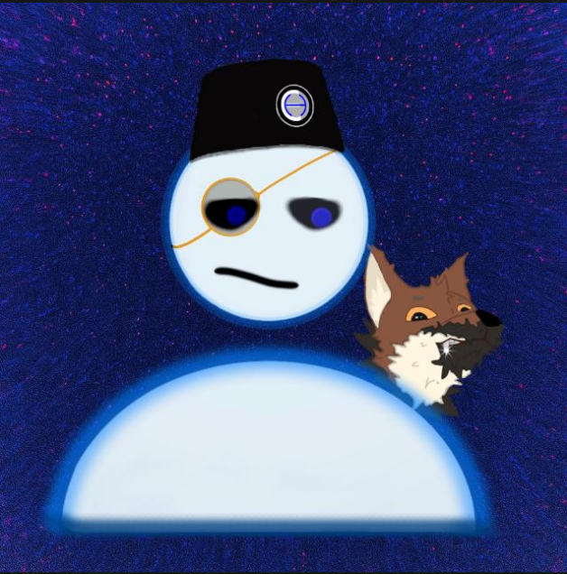

꧁ꦔꦸꦥꦪ ꦏꦮꦿꦸꦃ ꦔ꧀ꦭꦸꦲꦸꦂ ꦫꦱꦄ꧀꧈ ꦚꦴꦒ ꦗꦒꦢ꧀꧈ ꦭꦤ꧀ ꦚꦶꦁꦒ꧀ꦭꦁ ꦏꦂꦱꦄ꧀꧂
"Ngupaya kawruh ngluhur rasa, njaga jagad, njingglang karsa."
Aaron adalah sosok reflektif dan sistematis yang melihat dunia sebagai jaringan sebab-akibat yang dapat dipahami dan disusun. Dengan kecenderungan introvert dan pemikiran yang mendalam, ia membangun ide dari fondasi sains, sejarah, dan geopolitik yang kuat, menghasilkan perspektif yang logis sekaligus visioner. Dalam proses kreatif, Aaron berperan sebagai arsitek—menyusun struktur, menjaga konsistensi, dan memastikan setiap elemen memiliki makna serta keterkaitan yang jelas.
Kalax adalah sisi ekspresif dan penuh kehidupan yang menghadirkan warna dalam setiap ide. Lebih spontan dan playful, ia menikmati momen, menjalin koneksi, dan menyalurkan kreativitas tanpa batas melalui cerita yang hangat dan relatable. Sebagai representasi inner-child, Kalax bukan hanya pelarian, tetapi sumber energi yang menjaga agar proses kreatif tetap hidup, dinamis, dan terasa manusiawi.
A science fiction worldbuilding and creative writing project.
Documenting the journey between two sides of creativity
Simulate the experience of operating SCP-010-ID.